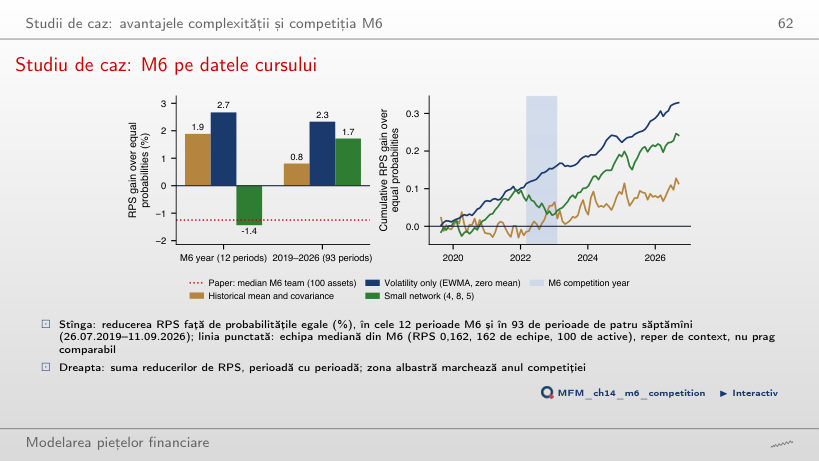

În stînga este slide-ul din curs, în dreapta aceeași figură, calculată în browser din aceleași date. Butonul ▶ modifică parametrul pas cu pas.
Ce prognozăm și unde este semnalul · Atenția și Transformerele · Testul 1: prognoza randamentelor · Testul 2: prognoza volatilității realizate · Testul 3: VaR 1% și ES 2,5% · Studii de caz: avantajele complexității și competiția M6 · AI pentru descoperire științifică
Ce prognozăm și unde este semnalul
Semnalul: în medie sau în volatilitate

Răspuns
Valorile absolute. Autocorelația lor este 0,29 la lag-ul 1 și 0,13 la lag-ul 50, iar toate cele 50 de valori sînt în afara benzii ±0,024. Randamentele au autocorelația −0,099 la lag-ul 1 și 15 lag-uri în afara benzii, mici și cu semne diferite. Semnul negativ nu înseamnă persistență mai puternică, iar predictibilitatea mediei și cea a volatilității sînt probleme distincte. Graficul sugerează volatility clustering; utilitatea prognozelor se verifică out-of-sample. Banda este o referință punctuală sub ipoteza i.i.d., nu o bandă simultană pentru toate lag-urile.
Atenția și Transformerele
Împărțirea unui context de 512 zile în patch-uri

Răspuns
Sînt 512/16 = 32 de tokeni și 32² = 1 024 de perechi ordonate, față de 512² = 262 144 dacă fiecare zi ar fi un token: de 16² = 256 de ori mai puține. TimesFM-2.5 folosește patch-uri de 32 de zile: 16 tokeni și 256 de intrări. Este calculul simplificat pentru un head, fără tokeni suplimentari; un strat multi-head are cîte o astfel de matrice pentru fiecare head.
Testul 1: prognoza randamentelor
R² out-of-sample pentru randamente

Răspuns
Nu. AR(1) și LSTM reduc eroarea pătratică medie observată cu 0,94%, respectiv 0,93% (R² out-of-sample), dar p-value-urile DM bilaterale sînt 0,639 și 0,090. Testul nu stabilește superioritatea la 5% și nici nu demonstrează egalitatea. TimesFM-2.5 este semnificativ mai slab decît zero (R² −3,35%, p DM = 0,001). Doar pe BET LSTM trece la 5% (R² +1,15%, p = 0,014), înainte de corecția pentru testele multiple.
Testul 2: prognoza volatilității realizate
Prognozele în timpul șocului din aprilie 2025

Răspuns
Niciunul. Volatilitatea realizată a fost 106,7% anualizat. Prognozele pentru acea zi au fost 27,5% pentru log-HAR, 29,9% pentru GARCH-t, 30,1% pentru Chronos-2 și 30,4% pentru TimesFM-2.5. Ele cresc deja față de ziua precedentă, după saltul din 4 aprilie (46,3%), dar subestimează vîrful de peste trei ori. Cozile groase și pre-antrenarea nu aduc informația din știrile tarifare încă neobservate.
Pierderile QLIKE ale celor opt modele de volatilitate

Răspuns
QLIKE medie este 0,223 pentru Chronos-2 și 0,226 pentru log-HAR, dar p DM = 0,539. Avantajul descriptiv nu stabilește superioritatea statistică, iar nerespingerea nu demonstrează echivalența. După 3 noiembrie 2025, micul LSTM are cea mai mică medie observată, 0,217; aceasta este o clasare în eșantion.
Testul 3: VaR 1% și ES 2,5%
Ratele de depășire ale VaR 1%

Răspuns
Da. p Kupiec ≈ 0,001. Sub ipoteza depășirilor independente cu probabilitatea 1%, intervalul central binomial nominal de 95% este [17; 37]; cele 45 de depășiri (rata 1,67%) îl depășesc. Mai multe depășiri indică subacoperire, nu prudență. Intervalul este discret, iar pragul Kupiec este asimptotic. Folosit ca filtru de volatilitate pentru FHS, același model dă 0,93% (p = 0,71).
Crahul COVID-19: VaR 1% pentru trei modele

Răspuns
Nu. Ambele au 2 depășiri în 104 zile, dar traiectorii diferite: VaR 1% maxim este 58,9% pentru hibrid (17.03.2020) și 26,4% pentru FHS, iar pierderea zilnică maximă observată este 12,8%. Aceste valori motivează evaluarea calibrării și a pierderii de prognoză. Nici egalitatea numărului de depășiri, nici un VaR peste pierderea maximă nu stabilesc singure clasamentul. Chronos-2 direct are 4 depășiri, iar HS 12.
Transformarea integrală de probabilitate (PIT) și calibrarea

Răspuns
În 1,67% dintre zile, deci prima bară PIT este de 1,67 ori înălțimea așteptată: subacoperire la cuantila de 1%. Această frecvență nu descrie singură forma întregii cozi. FHS dă 1,11%. Testul Berkowitz respinge Chronos-2 pe S&P 500 (p = 0,019, σ̂ = 1,03); în testele raportate pentru perioada completă, FHS nu este respins pe niciuna dintre cele trei piețe.
Compararea prognozelor (VaR 2,5%, ES 2,5%): MCS

Răspuns
Doar HS pe BET are p MCS < 0,10: valoarea este 0,015. MCS poate păstra mai multe modele fără a demonstra că sînt echivalente. Pe S&P 500, FHS are cea mai mică pierdere FZ0, iar testul DM, cu corecția Holm pe cele cinci comparații cu FHS, separă FHS de hibridul cu Chronos-2 (DM +2,65, p = 0,008 înainte de corecție, p Holm = 0,032). Pe BET, același test dă p Holm = 0,054.
VaR 1% conformal adaptiv pe S&P 500

Răspuns
Este mai mare: 3,36% pentru corecția conformală și 2,85% pentru FHS, pe 2 443 de zile, deși depășirile sînt 21 față de 24,4 așteptate. Rate apropiate de țintă nu impun medii egale. Separat, comparația perechii VaR–ES la 2,5% dă FZ0 medie 1,205 față de 1,013 și p DM = 0,001; acest rezultat nu se deduce numai din mediile VaR la 1%. Cu γ = 0 (calibrare rolling cu nivel fix) sînt 16 depășiri și un VaR mediu de 3,58%.
Studii de caz: avantajele complexității și competiția M6
Studiu de caz: complexitatea pe datele cursului

Răspuns
Crește pînă la c = 50, apoi scade: 0,12 la c = 1, maximul grilei de 0,26 la c = 50 și 0,11 la c = 1 000 (t = 0,6). Modelul liniar cu aceiași 7 predictori și z = 10³ are 0,32. Este rezultatul pentru penalizarea și eșantionul indicate, nu o regulă generală despre complexitate.
Studiu de caz: M6 pe datele cursului

Răspuns
Modelul care folosește doar volatilitatea. Reducerea RPS față de probabilitățile egale este 2,33% pentru el (DM −6,35, p < 0,001), 0,81% pentru media istorică (p = 0,358) și 1,72% pentru rețea (p = 0,016). Activele volatile primesc probabilități mai mari pentru chintilele extreme. Clasamentul nu rezultă din folosirea mediei sau din complexitatea modelului și se schimbă cu w: la w = 0,5, media istorică are 1,91%, ușor peste modelul volatilității (1,88%); la w = 2, modelul volatilității mai cîștigă doar 0,28%.
AI pentru descoperire științifică
Mini-studiu de caz: un test fără putere

Răspuns
Nici prezența, nici absența memorării. Schimbarea estimată a diferenței QLIKE față de log-HAR este +0,0074, cu t HAC = 0,88 și p = 0,38. MDE pentru o putere de 80% este 0,0234, mai mare decît schimbarea observată; chiar și cu o fereastră infinită după publicare, MDE ar rămîne 0,0157. Nerespingerea nu exclude memorarea, iar o schimbare semnificativă nu ar separa automat memorarea de o schimbare a regimului pieței.
Randamente zilnice S&P 500, Bitcoin și BET și prețuri SPY la 5 minute: EODHD. Prognozele la o zi: Quantlets/Ch_14 (run_forecasts.py). Studiile de caz: SPY și cele 19 active M6 (EODHD), seriile FRED; prognozele M6: Quantlets/Ch_14 (m6_case.py).